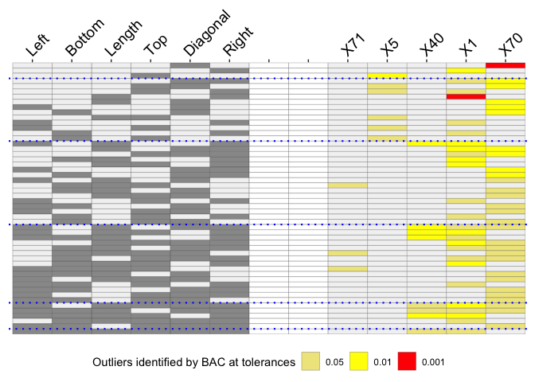
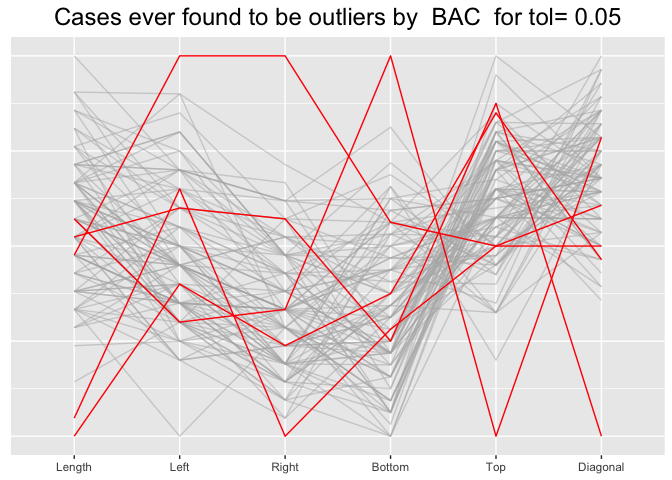

OutliersO3 is for visualising results of outlier analyses. Overview of Outliers (O3) plots show which cases are identified as potential outliers for different combinations of variables from a dataset.
You can compare sets of outliers identified by up to six different methods. You can also compare results for a single method at up to three different tolerance levels.
Flury and Riedwyl introduced the famous banknote dataset in their excellent book on multivariate statistics. There are measurements on 100 genuine banknotes and on 100 counterfeit banknotes. Presumably the genuine notes should all be very similar.
The method mvBACON from robustX has been used to identify possible outliers. There are 6 numeric measurements of the notes, so there are 63 possible variable combinations. An O3 plot has one row for each variable combination for which outliers were found and those variables are specified by the relevant columns on the left of the plot. The cases identified as outliers for at least one combination each get a column to the right of the plot.
library(OutliersO3) #> Registered S3 method overwritten by 'GGally': #> method from #> +.gg ggplot2 data(banknote, package="mclust") data <- banknote %>% filter(Status=="genuine") %>% select(-Status) pB <- O3prep(data, method="BAC", tols=c(0.05, 0.01, 0.001), boxplotLimits=c(6,10,12)) pX <- O3plotT(pB) #> Warning: Vectorized input to `element_text()` is not officially supported. #> Results may be unexpected or may change in future versions of ggplot2. pX$gO3

The O3 plot shows outliers found by the mvBACON method for three tolerance levels. Two banknotes, X71 and X5, are only identified for a few combinations mainly at a level of 0.05. A further banknote, X40 is identified more often, mostly at a level of 0.01. Two banknotes, X1 and X70, were identified as outliers at a level of 0.001 for the combination of attributes Length and Right and for Diagonal on its own respectively. When X1 is identified as an outlier at other levels the attribute Right is always involved. The supporting parallel coordinate plot suggests why:
pX$gpcp

This plot also suggests that all five cases identified as potential outliers are relatively extreme on at least one of the six attributes.
There are more examples in the package vignettes.